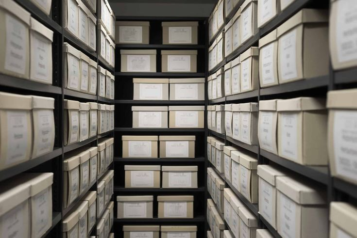

Poor relief and charities
Series 6 of 6 · MRO/CHA
1601–1999 · 16.4 m · Off-site
ReferenceMRO/CHA
Dates1601–1999
Length on the shelf16.4 m
StoreOff-site
Items listed12, 2 closed
Order now, in the reading roomWed 14 Oct, 10:00
Overseers’ accounts, settlement papers, the workhouse at Ousewick, and the town’s almshouse and coal charities. Held at the county store and brought in on the next open day.
| Reference | Title | Dates | Extent | Access | Slip |
|---|---|---|---|---|---|
| MRO/CHA/003 | Overseers’ accounts | 1601–1702 | 1 vol | Open · no copies | |
| MRO/CHA/004 | Overseers’ accounts | 1702–1836 | 3 vols | Open | |
| MRO/CHA/009 | Settlement certificates and removal orders | 1697–1834 | 2 boxes | Open | |
| MRO/CHA/012 | Ousewick workhouse admission and discharge book | 1838–1914 | 4 vols | Open | |
| MRO/CHA/013 | Ousewick workhouse guardians’ minutes | 1836–1930 | 10 vols | Open | |
| MRO/CHA/019 | Almshouse trustees’ minutes | 1712–1965 | 3 vols | Open | |
| MRO/CHA/020 | Coal charity distribution lists | 1820–1958 | 2 boxes | Open | |
| MRO/CHA/024 | Bread dole accounts | 1755–1890 | 1 vol | Open | |
| MRO/CHA/028 | Public assistance committee minutes | 1930–1948 | 2 vols | Open | |
| MRO/CHA/032 | Welfare relief case files | 1948–1999 | 6 boxes | Closed until 2029 | |
| MRO/CHA/035 | Almshouse residents’ register | 1902–1998 | 1 vol | Closed until 2028 | |
| MRO/CHA/040 | Charity commissioners’ schemes | 1863–1972 | 1 box | Open |
Order by 16:30 to see an item at 10:00 on the next open day. Relief case files are closed for 30 years from the last entry.
Closed itemsMRO/CHA/032, until 2029
MRO/CHA/035, until 2028
MRO/CHA/035, until 2028
Fragile, no copiesMRO/CHA/003
